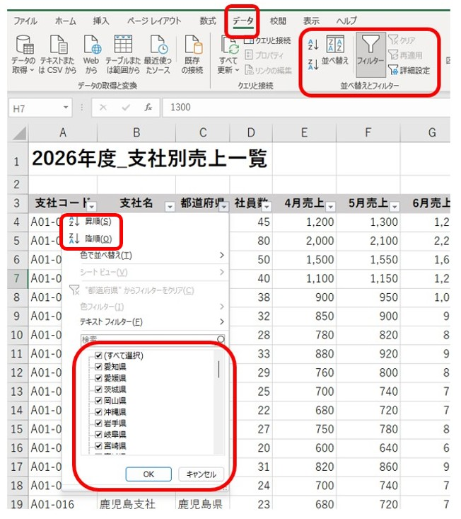
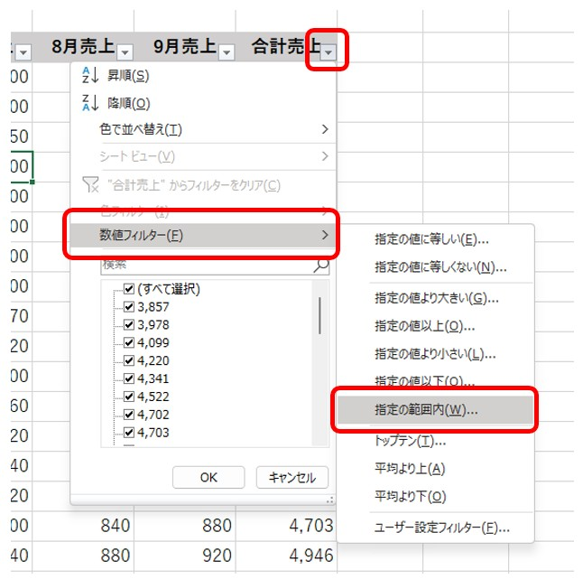
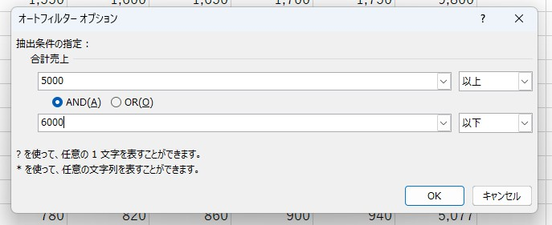
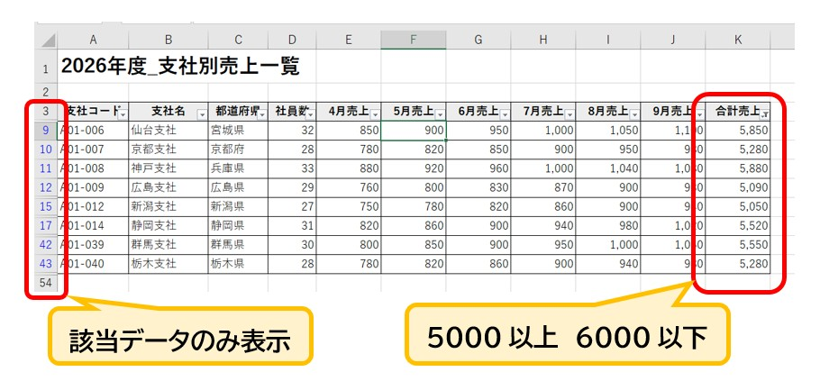
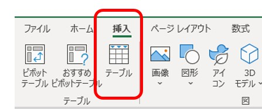
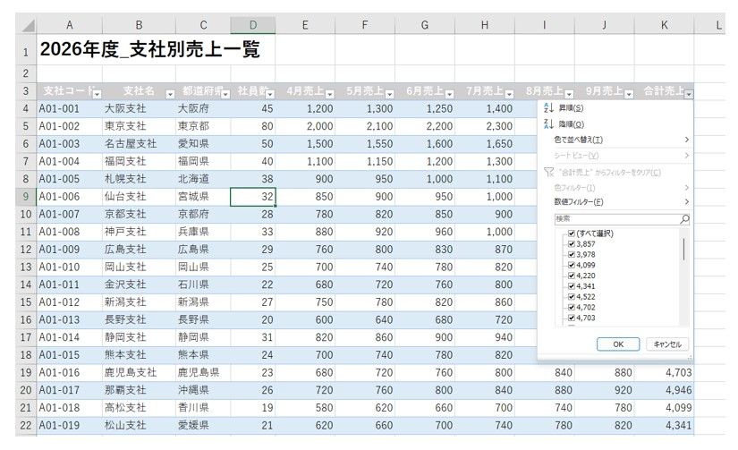

Excelで必要なデータをすぐに見つけるには？データベースとテーブルの使い方
大量のデータから欲しい情報を一瞬で取り出す。実務を支える「情報の整理と管理」の基本を学びましょう。
仕事のデータは「探す」ことに時間がかかる
仕事でExcelを使っていると、最初は数行だったリストが、日々の業務を通じて100行、200行と増えていきます。多くなったデータの中から、自分の必要な情報を一つずつ目で探すのは、時間がかかるだけでなく見落としの原因にもなります。
Excelを単に入力するだけの用紙としてではなく、「必要な情報をいつでも正確に取り出せる倉庫（データベース）」として扱うコツを確認しましょう。
データベースの基本：名称を知るとExcelがもっとわかる
Excelをデータベース（情報の倉庫）として扱うとき、まず覚えておきたい2つの言葉があります。この名称を知っているだけで、Excelの仕組みを整理して考えられるようになります。
- フィールド（列）： 「支店名」や「売上金額」など、データの「項目」を表します。縦の列のことです。
- レコード（行）： 「〇月〇日の〇〇支店のデータ」という、「1件分」のまとまりを表します。横の一行のことです。
「1行につき、1件のデータを正しく入れる」というルールを守ることで、並べ替えやフィルターが正しく機能するようになります。
並べ替え：ルールを決めて順番を整える
バラバラに並んだデータを一定のルールで並べ直すのが「並べ替え」です。実務では主に以下の2つの目的で使われます。
- 昇順（小さい順）： 「日付」で並べれば、対応すべき期限が近い順に整理できます。
- 降順（大きい順）： 「売上金額」で並べれば、どの項目が重要（優先順位が高い）なのかを即座に把握できます。

▲ [データ]タブにあるボタンから、昇順・降順の切り替えやフィルターの設定が行えます
並べ替えをする前に、表のすぐ隣や上に余計なメモがくっついていないか確認してみてください。表が他のデータと離れて「孤立」した状態になっていれば、Excelが範囲を正しく判断できるので、データがバラバラにズレるトラブルを防げますよ。
フィルター：必要な情報だけを「表示させる」
膨大なデータの中から、特定の条件に合うものだけを画面に出すのが「フィルター」機能です。ここで知っておいてほしいのは、フィルターは条件に合わない行を削除しているのではなく、一時的に「隠している」だけだということです。ボタン一つでいつでも元の状態に戻せるので、安心して操作してください。
数値フィルターで「範囲」を指定する
単に項目にチェックを入れるだけでなく、「5,000円以上、6,000円以下」といった、より細かい数値の絞り込みも可能です。

▲ 見出しの▼ボタンから「数値フィルター」→「指定の範囲内」を使うと、数値を自由に絞り込めます

▲ 「以上」「以下」などの条件を組み合わせてOKを押すだけで、対象のデータが抽出されます
絞り込みが行われると、該当するデータの行番号が青色に変わり、今は全体の一部を表示していることが一目でわかるようになります。

▲ フィルター実行中。条件に一致するデータのみが表示されています
Excelの「テーブル」は使ったほうがいい？
データをより便利に管理する仕組みとして「テーブル」という機能があります。非常に強力ですが、実は「すべての表をテーブルにすればいい」わけではありません。便利な機能なのに、実際の職場で「普通のセルのまま」が好まれるのには理由があります。
テーブルが敬遠される主な理由
-
操作感の違いや自動化への戸惑い
テーブルにすると列全体がひとまとまりとして扱われます。勝手に色がついたり、数式が列全体に自動コピーされたりするため、不慣れなうちは「普通のセルと違う感じ」に戸惑うことがあります。
-
修正の自由度とセル結合の制限
「この行だけ計算を少し変えたい」といった例外的な操作がしにくかったり、見た目を整えるための「セルの結合」ができなかったりします。そのため、レイアウト重視の書類作成とは相性が良くない側面があります。
日本の職場ではExcelを「帳票（紙の書類の再現）」として使う場面も多いため、あえて普通のセル範囲のままで運用されることも多いのです。
「データの目的」でテーブルを使い分ける
どんなときにテーブルを使うべきか、その判断基準は「データの目的」にあります。名簿や売上リストのように、情報をどんどん蓄積していく役割なら、テーブルが最適です。
テーブルに向いている
- ○ 顧客一覧
- ○ 商品一覧
- ○ 売上データ
- ○ 名簿
- ○ CSVから取り込んだデータ
テーブルに向いていない
- △ 請求書
- △ 見積書
- △ 申請書
- △ 報告書
- △ レイアウト重視の資料
テーブルに変換するメリット
「売上管理表」のようなデータ蓄積用の表は、テーブルにすると管理の手間が抑えられます。

▲ [挿入]タブから「テーブル」を実行すると、表が管理しやすい形式に変換されます
テーブルにすると、自動でフィルターボタンが付き、一行おきに色がつくことで、横に長い表でも見間違いを防ぎやすくなります。また、データが増えても自動で範囲が広がるため、管理がスムーズになります。

▲ テーブル変換後の表。一行おきに色がつくことで、データが非常に追いやすくなります
実務の作法：元データを壊さないための心がけ
Excelの操作に慣れてきたときこそ意識したい、丁寧な仕事の進め方を確認しましょう。
1 「非表示」ではなく「フィルター」を使う
特定の行を隠したい時に、右クリックで「非表示」にするのは避けましょう。 後で別の人がそのファイルを開いた時、データが隠れていることに気づかず、そのまま計算してミスを招く恐れがあるためです。 「フィルター」を使えば、行番号が青くなるため、誰が見ても「今は一部を隠している状態である」ことが一目で伝わります。
2 大きな修正の前には「予備」を作る習慣を
並べ替えやテーブル変換など、表の構造を大きく変える操作の前には、シートを丸ごとコピーして「予備（バックアップ）」を作っておきましょう。 万が一、意図しない結果になっても「すぐに元に戻せる」という安心感があることで、落ち着いて作業ができ、結果として入力の正確性も向上します。
まとめ｜Excelは「情報を活かす」ための道具
Excelは、ただ文字や数字を記録するためのソフトではありません。
データを整理し、必要な情報を探し、計算・集計したり、比較・分析したり。さらに、表やグラフにして相手に分かりやすく伝えることもできます。
今回紹介した並べ替え・フィルター・テーブルは、その中の一部にすぎません。
大切なのは、機能を覚えることだけではなく、「このデータをどう整理すれば、仕事がしやすくなるか」を考えることです。
蓄積するデータにはテーブル、見せるための書類には通常のセルを使うなど、目的に合わせて機能を使い分けることもExcelを上手に使うポイントです。
Excelを「入力する場所」から、「仕事を進めるための道具」へ。
そう考えると、Excelの活用範囲はもっと広がっていきます。